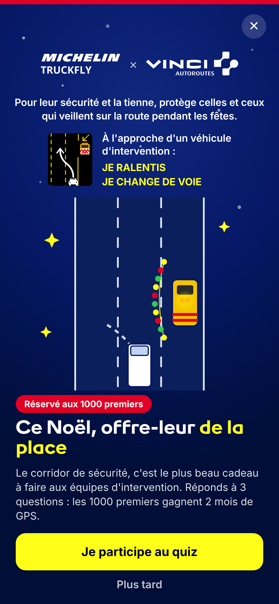
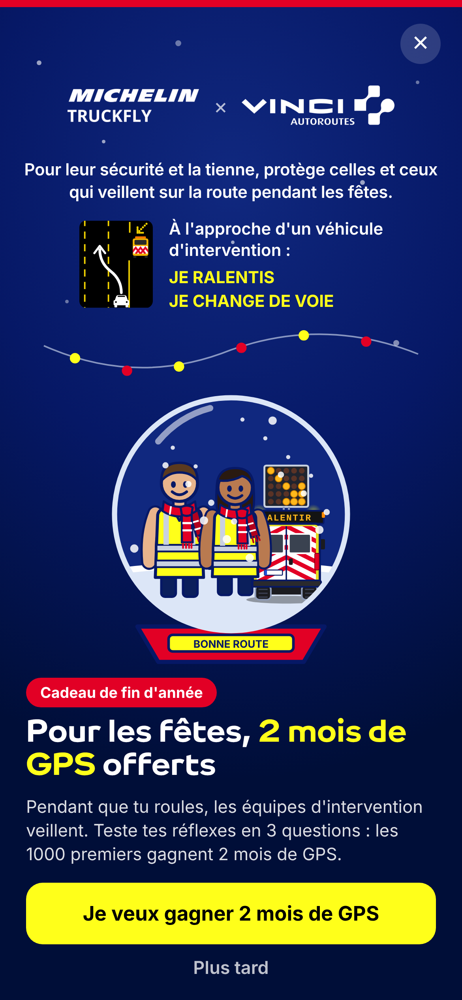
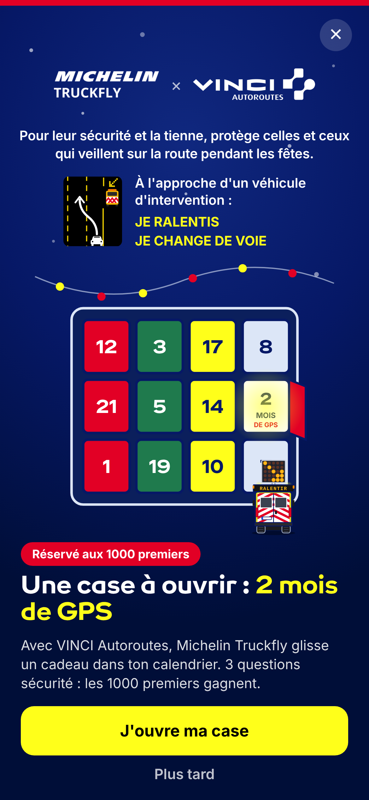

Michelin Truckfly × VINCI Autoroutes · interstitiel
3 nouvelles pistes créatives
 Actuelleles patrouilleurs
Actuelleles patrouilleurs
E · Le corridor de lumièrele geste sécurité en image
F · La boule à neigel'objet de Noël
G · Le calendrier de l'Aventle cadeau à ouvrir